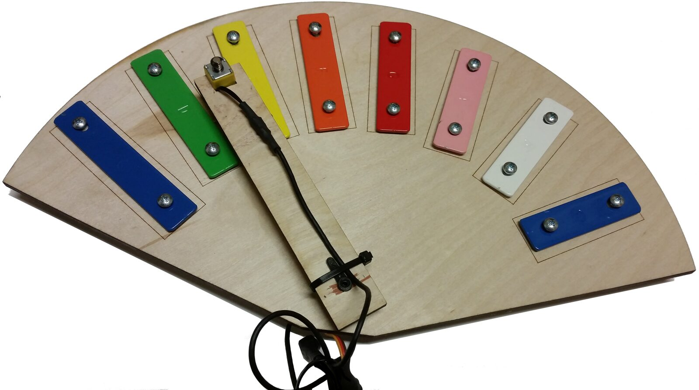
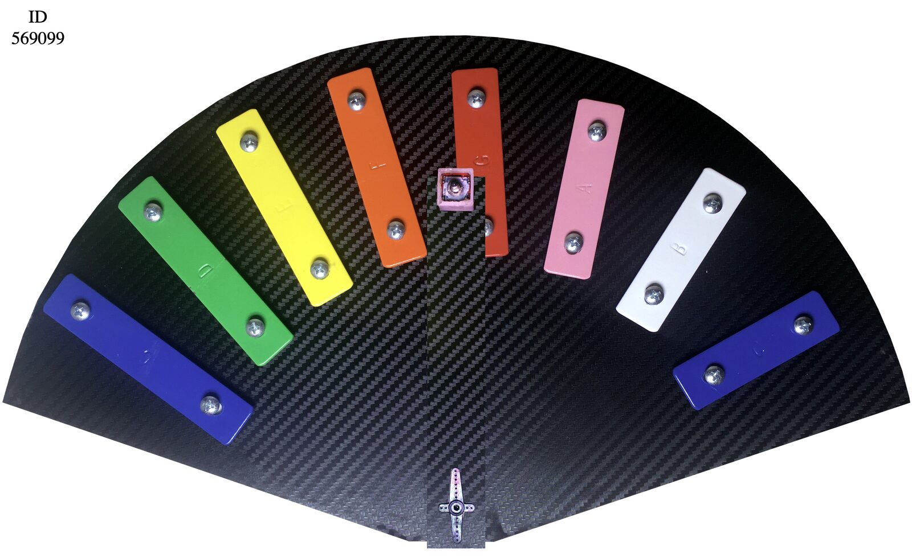
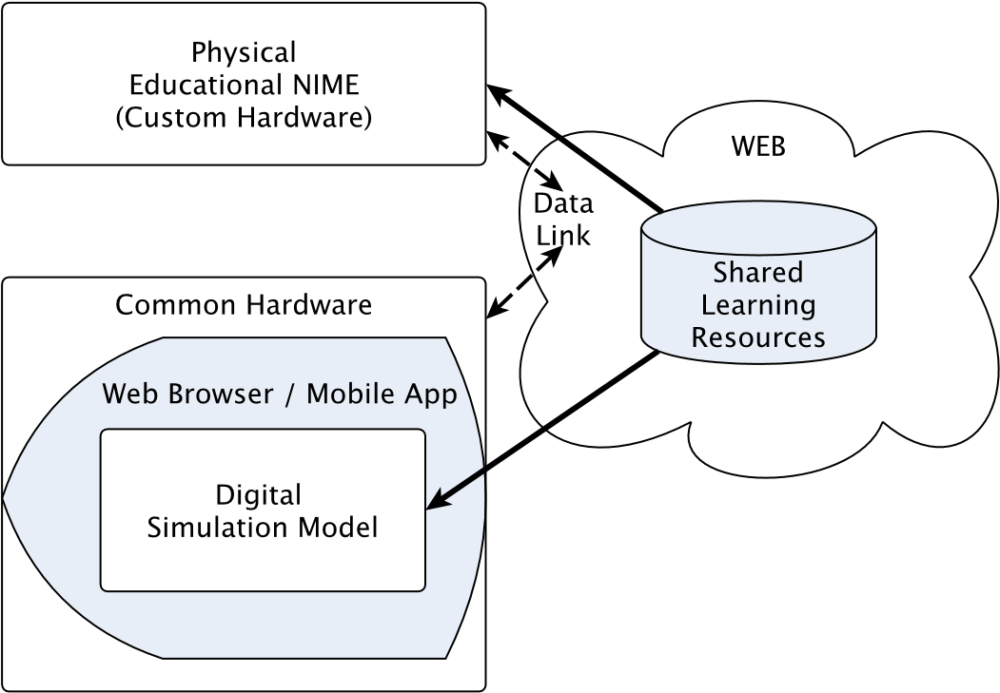
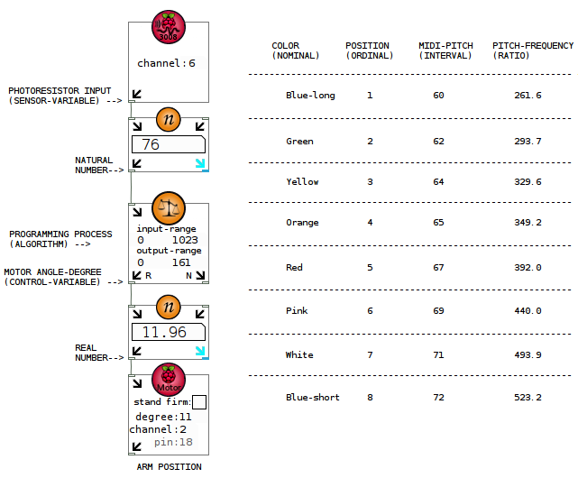

Music Computing and Computational Thinking: A Case Study
Abstract
The NIME community has proposed a variety of interfaces that connect making music and education. This paper reviews current literature, proposes a method for developing educational NIMEs, and reflects on a way to manifest computational thinking through music computing. A case study is presented and discussed in which a programmable mechatronics educational NIME and a virtual simulation of the NIME offered as a web application were developed.
Author Keywords
Computational Thinking, Web Application, Educational NIMEs
CCS Concepts
•Applied Computing Arts and Humanities Sound and Music Computing
•Applied Computing Education Interactive Learning Environments
Introduction
Computational thinking is a construct that has been introduced as a potential foundation for formal education in the public school system. However, for the construct to be effective in this setting, it needs to be supported by well-defined curricula [1]. Wing [2] presents computational thinking as a blend of mathematical and engineering thought processes that drive the design of physical or cyber-physical solutions. This paper defines computational thinking as problem-solving using computers.
Educational NIMEs have have a history of addressing the lack of appropriate curriculum with two distinct design approaches. One approach is to design a learning environment for the development of electronic musical instruments that use custom hardware [3][4][5]. Another approach is to design virtual musical instruments that run on common hardware [6][7][8]. Educational NIMEs that depend on custom hardware constrain the ability for distance learning and internet interventions, unless learners have the necessary hardware platform. The ability for practicing electronic system design with virtual educational NIMEs is constrained by learners’ access to physical computer platforms and controllers that can be integrated in customized hardware designs.
A blend of these two design approaches can reduce each other’s constraints. Therefore, by developing and documenting the design of physical NIMEs, while also developing a virtual model of the NIME as a web service, learners could have access to the web service, learning resources and design documentation online, as well as to the custom hardware during in-person workshops. Such a design approach can promote distance learning [9] and internet interventions, while musical expression adds a personalized experience through self-expression. For example, during the COVID-19 pandemic there was an increased need for distance learning. Learning resources for in-person teaching that were ready to be used in distance learning mattered for teaching continuity across educational tiers. It is not a matter of developing virtual rather than physical NIMEs for educational purposes. Developing learning resources available online and virtual simulations of physical NIMEs as web services can make a difference in reaching a wider audience than by in-person learning activities with any kind of educational NIMEs.
Educational NIMEs
The existing research suggests that the practice of computational thinking depends on engineering limitations. Leeuw and Tamminga report on pedagogical practices of their school, which includes system design as an introduction to electronics; however, they point out the lack of organized laboratories for electronics development [10]. Xambó et al. discuss a curriculum for physical computing, which provides physical constraints and reveals that custom hardware and design complexity is a limiting factor in designing NIME-related curricula appropriate for distance learning [11].
The prior work also offers examples of using programming for sound production in order to learn through practice. Kaneko discusses the computational thinking behind turning a touchscreen into an interface for musical expression that makes it easy for its user to navigate modes and scales during sound production [12]. Ford and Nash discuss an iterative design method for creating music using a visual programming language. The creative process is broken down to visual components, so that learners can practice computational thinking through their experimentation with the available components [13].
It is common for educational NIMEs to focus on playfulness, which has been suggested as an alternative to performing and with the purpose of learning through enjoyable practice. Marquez-Borbon discusses the development of environments for collaborative learning based on group playing with NIMEs [14]. Tomás describes a number of different pedagogical methods for learning based on playing with or designing NIMEs [15]. The discussed literature seems to reinforce the previously stated points on educational NIMEs:
The development of custom and potentially fragile hardware limits the widespread use of NIMEs, yet it promotes computational thinking for the development of physical interfaces, and
In contrast, the development of virtual NIMEs promotes the widespread use of NIMEs, yet it demotes computational thinking with constraints in developing physical interfaces.
Case Study
The following case study focuses on the advantages of combining both physical and virtual NIMEs. A method for educational NIMEs is proposed for the development of learning resources that can be shared between in-person and remote learning. A programmable mechanical glockenspiel was developed on a Raspberry Pi platform with an Analog-to-Digital Converter (ADC) add-on to read analog sensors and drive a Direct Current (DC) motor using a Pulse-Width-Modulation (PWM) electrical control signal and a solenoid electromagnet. The educational NIME focuses on playfulness (experimentation) rather than performance (optimization). It is programmable via the Pd-L2Ork software (https://github.com/pd-l2ork/) [16] and its goal is to practice computational thinking by encouraging users to control the actuators with a goal of sound and music production [17]. Additionally, as a response to the COVID-19 pandemic, a virtual glockienspiel was developed to simulate the functionality of the mechanical glockenspiel. The virtual model is accessible via a web browser and communicates with a server over a web socket connection to send and receive data. Figure 1 shows both the physical and virtual glockenspiels.
The physical educational instrument was initially developed for in-person workshops with children in secondary education. The goal was to get children exposed to musical computing and electronics on a visual programming platform which promotes easy prototyping via programmable virtual objects. However, during the COVID-19 pandemic distance learning and online research were more feasible than in-person learning and research. The virtual simulation of the physical instrument was developed as a programmable resource accessible via web browser to close the gap of having to have the custom hardware in order to use the available learning resources.


Physical Educational Instrument


Virtual Educational Instrument
Figure 1: Educational NIME: Physical NIME (top), Virtual model (bottom)
The Internet of Things (IoT) can enable physical and virtual NIMEs to exchange data and allows for multiple NIMEs to be networked so that one NIME can control another. Figure 2 shows the proposed design method for educational NIMEs and Figure 3 shows an example of a learning resource for the practice of computational thinking on the topic of types of measurement (nominal, ordinal, interval, and ratio).


Figure 2: Proposed Design Method for Educational NIMEs.


Figure 3: Types of Measurement: An Example using Scales of Sound-Pitch.
A study for the evaluation of differences between using the physical and the virtual instrument for the practice of computational thinking has not yet been conducted. An ongoing relevant study is looking at the differences in participants’ affective states of Enjoyment, Excitement [18][19], and Motivation, [20][21], between 3 different learning modalities for the practice of computational thinking through visual programming: 1) Visual programming; 2) Visual programming for sound production, and 3) Visual programming for sound production including the virtual educational instrument (Figure 1, top-right). It is hypothesized that when the modality of the learning activity requires more cognitive effort, the participants’ affective states will decrease.
Discussion
Experiential learning promotes positive affective states during instructional activities [22]. Educational NIMEs can be used for experiential learning due to their performative character that enables creative scenarios with immediate multisensory feedback. Virtual educational NIMEs that can be accessed via web browser or offered as mobile applications for common platforms can simulate physical models in order to increase access, including learning scenarios over distance.
An advantage of developing virtual simulation models for physical NIMEs is that virtual models can be presented to learners with variable degrees of simplification and in juxtaposition to models with different design principles. Virtual model complexity variability can be used to target different age levels of learners, while the juxtaposition of virtual models with different design principles can enable a comparison of different designs and their efficacy in delivering desired learning outcomes.
The ability of sharing learning resources between physical and virtual NIMEs for in-person and distance learning activities respectively, can enable the development of cohesive groups of learning activities for learners to choose from. More importantly, cognitively effortful learning activities decrease motivation [23], thus it is important for learners to be able to find activities that they enjoy and are more excited from in order to maintain higher levels of academic motivation.
Conclusion
A design method has been proposed for the development of educational NIMEs to broaden the use of educational NIMEs and to pursue both in-person and distance learning using virtual counterparts to the physical NIMEs. Physical computing is a way to provide physical constraints for the practice of computational thinking. However, educational activities that require custom hardware are less suitable for distance learning activities. A method for increasing the suitability of learning activities based on physical NIMEs for distance learning is to develop a virtual simulation model that shares learning resources with the physical NIME. The development of virtual models that simulate physical educational NIMEs alleviates the requirement of having access to custom platforms for the delivery of learning activities. In the context of computational thinking practice, programmable NIMEs allow for testing, observation, reflection on their operation, and imagination of alternative designs. Physical educational NIMEs can benefit from programming frameworks that run on web browser by sharing learning resources with virtual simulation models that are more suitable for distance or other kind of learning activities.
Acknowledgments
The Institute for Creativity, Arts, and Technology (ICAT) at Virginia Tech for partial support.
Compliance with Ethical Standards
No potential conflict of interest is known. Partial funding for the fabrication of mechatronic units was received. This paper does not report any data from human subject research. No animals were harmed.
Citations
- ↩Wing, J. M. (2006). Computational Thinking. Commun. ACM, 49(3), 33–35. https://doi.org/10.1145/1118178.1118215
Wing, J. M. Computational thinking’s influence on research and education for all. Italian Journal of Educational Technology, Vol 25, Iss 2, pp. 7-14 (2017).
↩- ↩Lehrman, P. D., & Ryan, T. M. (2005). Bridging the Gap Between Art and Science Education Through Teaching Electronic Musical Instrument Design. In Proceedings of the International Conference on New Interfaces for Musical Expression (pp. 136–139). Vancouver, BC, Canada. https://doi.org/10.5281/zenodo.1176768
- ↩Kapur, A., & Darling, M. (2010). A Pedagogical Paradigm for Musical Robotics. In Proceedings of the International Conference on New Interfaces for Musical Expression (pp. 162–165). Sydney, Australia. https://doi.org/10.5281/zenodo.1177821
- ↩Bukvic, I., Baum, L., Layman, B., & Woodard, K. (2012). Granular Learning Objects for Instrument Design and Collaborative Performance in K-12 Education. In Proceedings of the International Conference on New Interfaces for Musical Expression. Ann Arbor, Michigan: University of Michigan. https://doi.org/10.5281/zenodo.1178223
- ↩Harriman, J. (2015). Start ’em Young: Digital Music Instrument for Education. In E. Berdahl & J. Allison (Eds.), Proceedings of the International Conference on New Interfaces for Musical Expression (pp. 70–73). Baton Rouge, Louisiana, USA: Louisiana State University. https://doi.org/10.5281/zenodo.1179078
- ↩Kritsis, K., Gkiokas, A., Acosta, C. A., Lamerand, Q., Piechaud, R., Kaliakatsos-Papakostas, M., & Katsouros, V. (2018). A web-based 3D environment for gestural interaction with virtual music instruments as a STEAM education tool. In T. M. Luke Dahl Douglas Bowman (Ed.), Proceedings of the International Conference on New Interfaces for Musical Expression (pp. 348–349). Blacksburg, Virginia, USA: Virginia Tech. https://doi.org/10.5281/zenodo.1302613
- ↩Pessoa, M., Parauta, C., Luís, P., Corintha, I., & Bernardes, G. (2020). Examining Temporal Trends and Design Goals of Digital Music Instruments for Education in NIME: A Proposed Taxonomy. In R. Michon & F. Schroeder (Eds.), Proceedings of the International Conference on New Interfaces for Musical Expression (pp. 591–595). Birmingham, UK: Birmingham City University. Retrieved from https://www.nime.org/proceedings/2020/nime2020_paper115.pdf
- ↩de Jong, T., Linn, M. C., & Zacharia, Z. C. (2013). Physical and Virtual Laboratories in Science and Engineering Education. Science, 340(6130), 305–308.
- ↩Leeuw, H., & Tamminga, J. (2012). NIME Education at the HKU, Emphasizing performance. In Proceedings of the International Conference on New Interfaces for Musical Expression (pp. x–x). Zenodo. https://doi.org/10.5281/zenodo.1178321
- ↩Xambó, A., Saue, S., Jensenius, A. R., Støckert, R., & Brandtsegg, O. (2019). NIME Prototyping in Teams: A Participatory Approach to Teaching Physical Computing. In M. Queiroz & A. X. Sedó (Eds.), Proceedings of the International Conference on New Interfaces for Musical Expression (pp. 216–221). Porto Alegre, Brazil: UFRGS. https://doi.org/10.5281/zenodo.3672932
- ↩Kaneko, S. (2013). A Function-Oriented Interface for Music Education and Musical Expressions: “the Sound Wheelundefined. In Proceedings of the International Conference on New Interfaces for Musical Expression (pp. 202–205). Daejeon, Republic of Korea: Graduate School of Culture Technology, KAIST. https://doi.org/10.5281/zenodo.1178574
- ↩Ford, C. J., & Nash, C. (2020). An Iterative Design ‘by proxy’ Method for Developing Educational Music Interfaces. In R. Michon & F. Schroeder (Eds.), Proceedings of the International Conference on New Interfaces for Musical Expression (pp. 279–284). Birmingham, UK: Birmingham City University. Retrieved from https://www.nime.org/proceedings/2020/nime2020_paper53.pdf
- ↩Marquez-Borbon, A. (2020). Collaborative Learning with Interactive Music Systems. In R. Michon & F. Schroeder (Eds.), Proceedings of the International Conference on New Interfaces for Musical Expression (pp. 581–586). Birmingham, UK: Birmingham City University. Retrieved from https://www.nime.org/proceedings/2020/nime2020_paper113.pdf
- ↩Tomás, E. (2020). A Playful Approach to Teaching NIME: Pedagogical Methods from a Practice-Based Perspective. In R. Michon & F. Schroeder (Eds.), Proceedings of the International Conference on New Interfaces for Musical Expression (pp. 143–148). Birmingham, UK: Birmingham City University. Retrieved from https://www.nime.org/proceedings/2020/nime2020_paper28.pdf
- ↩Bukvic, I., Gräf, A., & Wilkes, J. (2017). Meet the Cat: Pd-L2Ork and its New Cross-Platform Version “Purr Data.” In Proc. of Linux Audio Conference. Saint-Etienne, France.
- ↩Tsoukalas, K., & Bukvic, I. I. (2018). Introducing a K-12 Mechatronic NIME Kit. In Proceedings of the International Conference on New Interfaces for Musical Expression (pp. 206–209). Zenodo. https://doi.org/10.5281/zenodo.1302553
- Betella, A., & Verschure, P. F. M. J. (2017). The Affective Slider (AS).
Accessed via https://github.com/albertobeta/AffectiveSlider, last access 4-November-2019.
↩ - ↩Betella, A., & Verschure, P. (2016). The Affective Slider: A Digital Self-Assessment Scale for the Measurement of Human Emotions. PLoS ONE, 11, e0148037. https://doi.org/10.1371/journal.pone.0148037
- Jones, B. D. (2017). The MUSIC® Model of Academic Motivation Inventory.
Accessed via https://www.themusicmodel.com/questionnaires/, last access 4-November-2019.
↩ Jones, B. D. (2009). Motivating students to engage in learning: The music model of academic motivation. International Journal of Teaching and Learning in Higher Education (2009), vol. 21, no. 2, pp. 272 – 285.
↩- ↩Kolb, D. A., Boyatzis, R. E., Mainemelis, C., & others. (2001). Experiential learning theory: Previous research and new directions. Perspectives on Thinking, Learning, and Cognitive Styles, 1(8), 227–247.
- ↩Müller, T., & Apps, M. A. J. (2019). Motivational fatigue: A neurocognitive framework for the impact of effortful exertion on subsequent motivation. Neuropsychologia, 123, 141–151. https://doi.org/https://doi.org/10.1016/j.neuropsychologia.2018.04.030